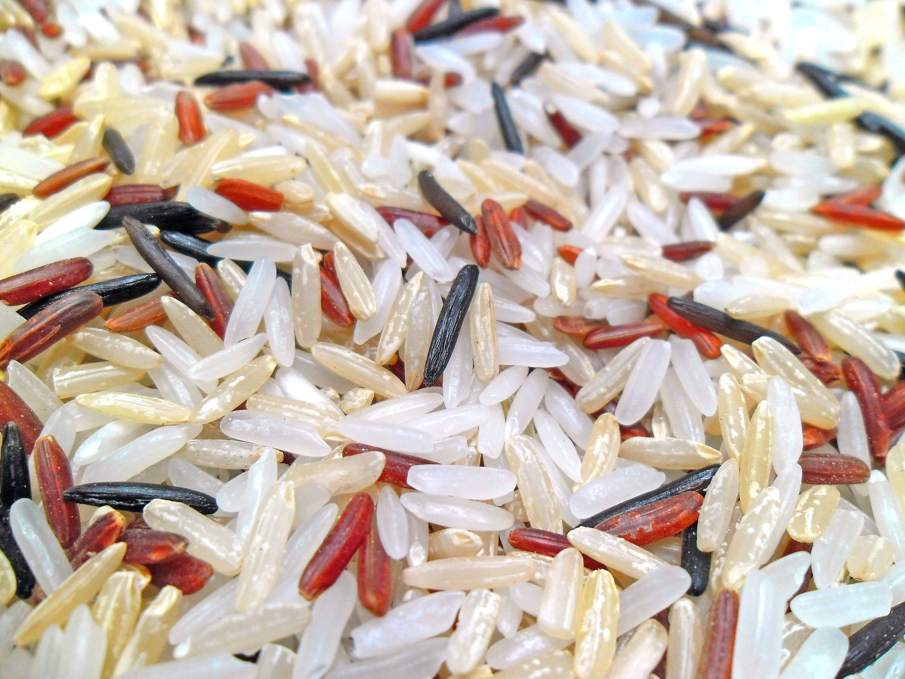

Rice is the seed of the grass species Oryza sativa (Asian rice) or Oryza glaberrima (African rice). As a cereal grain, it is the most widely consumed staple food for a large part of the world's human population, especially in Asia. It is the agricultural commodity with the third-highest worldwide production (rice, 741.5 million tonnes in 2014), after sugarcane (1.9 billion tonnes) and maize (1.0 billion tonnes).
Since sizable portions of sugarcane and maize crops are used for purposes other than human consumption, rice is the most important grain with regard to human nutrition and caloric intake, providing more than one-fifth of the calories consumed worldwide by humans. There are many varieties of rice and culinary preferences tend to vary regionally.